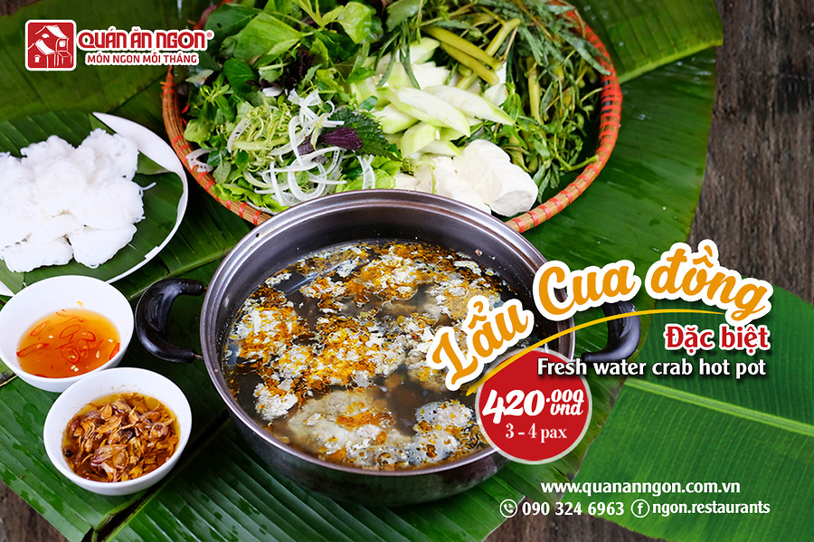

Lẩu Cua Quê
Trang Chủ/
Món Ngon Tháng

Món Ngon Tháng Lẩu Cua Đồng - Hương Vị Đồng Quê Giữa Lòng Hà Nội
- Không mang vẻ ngoài hào nhoáng hay khoác lên mình cái tên mỹ miều, cua đồng - món ăn làng quê dân dã từ lâu đã trở thành món ăn quen thuộc của mọi gia đình. Có thể chế biến nhiều món hấp dẫn từ cua đồng nhưng có lẽ, Lẩu cua đồng luôn là món ăn chiếm được cảm tình hơn cả bởi sự “dân dã” được thể hiện trọn vẹn trong nồi lẩu nghi ngút khói, khiến thực khách mỗi khi thưởng thức lại bồi hồi nhớ về những kỉ niệm chiều quê yên ả với món ăn quen thuộc từ mớ cua, con tép của mẹ. Không chỉ ngon, Lẩu cua đồng còn mang giá trị dinh dưỡng cực cao, là món ăn giàu canxi, đạm, chất béo và sắt, rất tốt cho cơ thể.
- Lẩu cua đồng có thể coi là món “lẩu đặc biệt” có thể dùng được cả 4 mùa trong năm. Cái vị ngọt bùi đặc trưng của cua đồng không những có khả năng xua tan đi cái nóng oi ả ngày hè, mà còn làm ấm lòng thực khách cả trong những ngày đông Hà Nội, khiến ai đã ăn một lần vẫn nhớ mãi không quên. Lẩu riêu cua đồng vốn chẳng có chuẩn mực nào về gia vị, bởi mỗi vùng miền lại có cách thưởng thức khác nhau tùy theo khẩu vị. Nhưng ai đã từng nếm Lẩu cua đồng của Quán Ăn Ngon đều phải trầm trồ khen ngợi bởi hương vị “đầy mê hoặc”, thơm ngon chuẩn vị Hà Thành mà hiếm nơi nào có được.
- Lẩu cua đồng Quán Ăn Ngon chinh phục thực khách bởi nồi nước sánh vàng, thơm nức với vị bùi bùi của cua đồng, vị thơm của hành hoa chưng gạch. Riêu cua vàng ruộm, béo ngậy, nổi thành từng miếng đầy đặn trên mặt nồi. Nước dùng mang hương vị rất đặc biệt. Vị chua dễ chịu từ sấu tươi và dọc nướng hòa quyện với vị ngọt của thịt cua tạo nên thứ mùi vị thanh thanh, đậm đà, khó quên.
- Húp miếng nước lẩu chua chua, sóng sánh riêu, hít hà chút hương vị đồng quê thân thuộc với rau muống chẻ, rau dền nhúng lẩu, đưa lên miệng nhai giòn giòn và cứ như thể muốn ăn tiếp mãi. Ít ai biết rằng, để có một nồi Lẩu riêu cua ngon chuẩn vị “ăn hoài vẫn nhớ”, các chuyên gia ẩm thực và đầu bếp chuyên nghiệp của Quán Ăn Ngon đã phải mất rất nhiều công sức nghiên cứu, chế biến kì công ngay cả từ khi chọn nguyên liệu. Để có được một nồi lẩu cua “thơm ngon đúng điệu” phải chọn những chú cua cái mập, di chuyển nhanh, cua mới chắc thịt và nhiều gạch. Quá trình chế biến cũng thật công phu đòi hỏi sự tỉ mỉ của người đầu bếp. Cua đồng được làm sạch, tách riêng gạch rồi xay nhuyễn phần thịt, lọc lấy nước quấy thành miếng sau đó xào theo công thức riêng. 1 kg cua đồng mới chắt lọc được 1 lạng riêu cua, bởi vậy mà hương vị nước lẩu ở đây đặc biệt thơm ngon mà không cần sử dụng đến mì chính. Nước lẩu cũng được chế biến đặc biệt từ những loại quả chua tự nhiên như sấu tươi, dọc nướng chin, vớt bọt kĩ nên nước trong veo.
- Lẩu cua đồng ở Quán Ăn Ngon cũng thật đặc biệt với những đồ ăn kèm hấp dẫn. Gắp miếng bún lá từ bát nước chấm trộn hành phi vàng ruộm, nhúng chút bò dai ngon với thớ thịt săn chắc đỏ au, thịt gà béo mập, không quên bỏ thêm nhúm rau xanh mướt mắt đủ vị như mùng tơi, rau dền, rau rút, muống chẻ… vào nồi lẩu đang sôi sùng sục, gạch cua chưng ngậy vàng ươm, vị ngọt của cua ngấm vào từng thớ thịt, tỏa mùi hương thơm phức, khiến thực khách không thể cầm lòng.
- Không còn mộc mạc quê mùa, giờ lẩu cua đồng đã bước vào các nhà hàng sang trọng, góp phần làm phong phú thêm danh mục ẩm thực dân tộc Việt Nam. Cái lạnh trong những ngày mưa rét Hà Nội dường như tan biến, nhường chỗ cho tiếng cười giòn tan khi cùng gia đình, bạn bè ngồi quây quần bên nồi Lẩu riêu cua đồng nóng hổi, cắn một miếng gạch cua ngầy ngậy bùi bùi kể những câu chuyện phiếm ngày đông. Nếu bạn là một người con xứ Bắc xa quê, hay đơn thuần muốn thưởng thức hương vị lẩu riêu cua ‘chính gốc’ Hà Nội, đừng quên ghé thưởng thức Lẩu cua đồng Quán Ăn Ngon nhé.